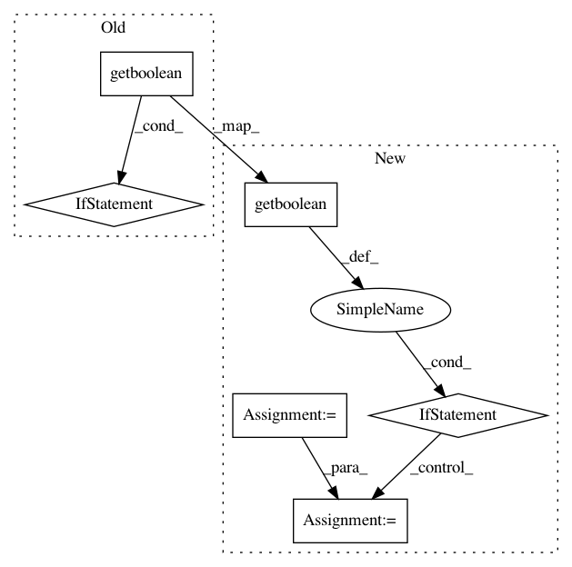

9c0d9880e9cc99bbe3522a3e4dbd051452b5d4ed,snntoolbox/parsing/utils.py,AbstractModelParser,parse,#AbstractModelParser#,79
Before Change
self.parse_convolution(layer, attributes)
if layer_type in {"Dense", "Conv2D"}:
if self.config.getboolean("cell", "binarize_weights"):
print("Binarizing weights.")
attributes["parameters"] = \
(binarize(attributes["parameters"][0]),
attributes["parameters"][1])
self.absorb_activation(layer, attributes)
if "Pooling" in layer_type:
self.parse_pooling(layer, attributes)
After Change
if layer_type in {"Dense", "Conv2D"}:
weights, bias = attributes["parameters"]
if self.config.getboolean("cell", "binarize_weights"):
from snntoolbox.utils.utils import binarize
print("Binarizing weights.")
weights = binarize(weights)
elif self.config.getboolean("cell", "quantize_weights"):
assert "Qm.f" in attributes, \
"In the [cell] section of the configuration file, "\
""quantize_weights" was set to True. For this to " \
"work, the layer needs to specify the fixed point " \
"number format "Qm.f"."
from snntoolbox.utils.utils import reduce_precision
m, f = attributes.get("Qm.f")
print("Quantizing weights to Q{}.{}.".format(m, f))
weights = reduce_precision(weights, m, f)
if attributes.get("quantize_bias", False):
bias = reduce_precision(bias, m, f)
attributes["parameters"] = (weights, bias)
// These attributes are not needed any longer and would not be
// understood by Keras when building the parsed model.
attributes.pop("quantize_bias", None)
In pattern: SUPERPATTERN
Frequency: 3
Non-data size: 6
Instances
Project Name: NeuromorphicProcessorProject/snn_toolbox
Commit Name: 9c0d9880e9cc99bbe3522a3e4dbd051452b5d4ed
Time: 2017-07-10
Author: bodo.rueckauer@gmail.com
File Name: snntoolbox/parsing/utils.py
Class Name: AbstractModelParser
Method Name: parse
Project Name: ilastik/ilastik
Commit Name: a56077ccaaccab72728d1254895ddb6104361f27
Time: 2013-04-10
Author: ullrich.koethe@iwr.uni-heidelberg.de
File Name: ilastik/applets/dataSelection/dataSelectionGui.py
Class Name: DataSelectionGui
Method Name: getImageFileNamesToOpen
Project Name: ilastik/ilastik
Commit Name: a56077ccaaccab72728d1254895ddb6104361f27
Time: 2013-04-10
Author: ullrich.koethe@iwr.uni-heidelberg.de
File Name: ilastik/applets/base/appletSerializer.py
Class Name: AppletSerializer
Method Name: repairFile